ミラーテレポーター

冒険家協会から各種ボスモンスターがいる地域に飛ばしてくれるシステムです。
1 1と選択後、レベル帯を選択、フィールドを選択。
１万ゴールド(ポータル系アイテムがある場合は無料)を払うことで該当フィールドに直接移動・ミラーマップ間を移動できます。
上手く活用することで、コル天使や記憶の活用を減らしつつ、スムーズなMAP移動ができます。
テレポート可能場所一覧
PTボス出現場所一覧も兼ねています。[P] ・・・ プレミアムダンジョン。入場にはポータル系アイテム(スフィアやゲートグローブなど)が必要です。
ミラーマップはPTボス関連は2つ配置されています。オリジナル含めると各鯖に3つの同一マップが存在します。
[M] ・・・ 位相ダンジョン。ミラーマップは高レベルモンスターが出現します。
[C] ・・・ ミラーダンジョン崩壊の対象マップです。
| 番号 | [P] | [C] | マップ名 | モンスター名 | 適正Lv | 画像 |
|---|---|---|---|---|---|---|
| 1 | 165～250 | |||||
| 1 | [P] | 海の神殿B3 | ダークシャドウ | 165 |
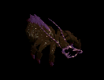 |
|
| 2 | [P] | パブル鉱山B1 | ||||
| 3 | 廃坑B10 | |||||
| 4 | [P] | レッドアイ秘密基地B2 | リッチ | 220 |
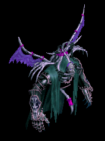 |
|
| 5 | 魔法傭兵の墓B2 | |||||
| 6 | 呪いの墓B1 | |||||
| 7 | [P] | レッドアイ秘密基地B3 | ソウルガーダー | 250 | ||
| 8 | [P] | 海の神殿B4 | ||||
| 9 | 小さい傭兵の墓B1 | |||||
| 番号 | [P] | [C] | マップ名 | モンスター名 | 適正Lv | 画像 |
|---|---|---|---|---|---|---|
| 2 | 285～365 | |||||
| 1 | [P] | レッドアイ秘密基地B4 | タートルドラゴ | 285 |
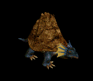 |
|
| 2 | ミルトリムの道/シュトラセラト入口付近 | |||||
| 3 | キャンサーの巣B4 | |||||
| 4 | [P] | レッドアイ秘密基地B5 | デスナイト | 305 |
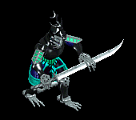 |
|
| 5 | [P] | レッドアイ倉庫 | ||||
| 6 | スウェーブタワー11F | |||||
| 7 | 過ぎし栄光の展示場 | |||||
| 8 | ガディウス大砂漠 / モリネルタワー付近 | 狂気の指揮官 | 365 | |||
| 9 | [P] | デフヒルズ古代遺跡B1 | ||||
| 10 | [P] | パブル鉱山B2 | ||||
| 11 | フォーリン望楼地下 | |||||
| 番号 | [P] | [C] | マップ名 | モンスター名 | 適正Lv | 画像 |
|---|---|---|---|---|---|---|
| 3 | 400～460 | |||||
| 1 | [P] | デフヒルズ小さな洞窟B1 | デスピンサー | 400 | ||
| 2 | [P] | デフヒルズ小さな洞窟B2 | ||||
| 3 | [M] | バヘル大河 / 東バヘル川 | ||||
| 4 | [C] | バヘル大地 / エルベルク山脈西部地域 | ||||
| 5 | 暴かれた納骨堂B1 | |||||
| 6 | ゴリマ沼地 | ダークエルフ将校 | 460 |
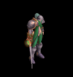 |
||
| 7 | ネイダック平原 / ラカリフサ北部地域 | |||||
| 8 | [C] | ダークエルフ王宮1F | ||||
| 9 | [P] | ダークエルフ王宮への近道 | ||||
| 10 | 西プラトン街道 / グレートフォレスト入口 | |||||
| 番号 | [P] | [C] | マップ名 | モンスター名 | 適正Lv | 画像 |
|---|---|---|---|---|---|---|
| 4 | 515～545 | |||||
| 1 | 隠された収容所 | 悪夢のサソリ | 515 | |||
| 2 | 南フォーリンロード / エルン山南部地域 | |||||
| 3 | [M] | 東プラトン街道 / イースタンブリッジ付近 | ||||
| 4 | [M] | 呪いを受けたミズナの洞窟B1 | ||||
| 5 | [C] | 中央プラトン街道 / グレートフォレスト入口付近 | ||||
| 6 | 南フォーリンロード / テレットトンネル出口付近 | 火炎の鬼 | 545 | |||
| 7 | [P] | ダメルの地下迷宮入口 B1 | ||||
| 8 | [C] | 兵営B1 | ||||
| 9 | 西プラトン街道 / アリアン東部地域 | |||||
| 10 | ソゴム山脈 赤山登山路 | |||||
| 番号 | [P] | [C] | マップ名 | モンスター名 | 適正Lv | 画像 |
|---|---|---|---|---|---|---|
| 5 | 560～580 | |||||
| 1 | ナダラ平原の沼地帯 / ノーススワンプ | ブレイマ | 560 | |||
| 2 | [M] | ルリリバー / 川河口 | ||||
| 3 | [M] | エルベルグ山脈 / ハノブ西部地域 | ||||
| 4 | [M] | 名も無き遺跡 B2 | ||||
| 5 | 地下界補給倉庫 | |||||
| 6 | [M] | 東プラトン街道 / 道の中間地点 | サタン | 580 | ||
| 7 | [P] | レッドアイ秘密基地B6 | ||||
| 8 | ソゴム山脈 赤山 | |||||
| 9 | [C] | 旅館 1F | ||||
| 10 | クェレスプリング湖 | |||||
| 番号 | [P] | [C] | マップ名 | モンスター名 | 適正Lv | 画像 |
|---|---|---|---|---|---|---|
| 6 | 620～660 | |||||
| 1 | モリネルタワー4F | ラットキング | 620 | |||
| 2 | 北フォーリンロード / ビガプール西部地域 | |||||
| 3 | ブラックファイヤーダンジョン | |||||
| 4 | [M] | ビッグマウスダンジョン B4 | ||||
| 5 | [P] | 埋もれた地下別荘 B3 | ||||
| 6 | ガディウス大砂漠 / デフヒルズ北側 | オーガゼネラル | 660 | |||
| 7 | [C] | ガルカス悪魔軍集結地 B1 | ||||
| 8 | ガルカス悪魔軍集結地 B2 | |||||
| 9 | [M] | 東プラトン街道 / エルベルグ山脈 峠 | ||||
| 10 | ハンヒ山脈 / ドレム川付近 | |||||
| 番号 | [P] | [C] | マップ名 | モンスター名 | 適正Lv | 画像 |
|---|---|---|---|---|---|---|
| 7 | 670～710 | |||||
| 1 | 半島の海辺 | エルフ守護者 | 670 | |||
| 2 | 北フォーリンロード / ネイダック平原地帯 | |||||
| 3 | [C] | 時の森 1層 | ||||
| 4 | 疑問の森 北西部 | |||||
| 5 | [M] | 時の森 3層 | ハゲワシ闘士 | 710 | ||
| 6 | 時の森 2層 | |||||
| 7 | 神秘の洞窟B2 | |||||
| 番号 | [P] | [C] | マップ名 | モンスター名 | 適正Lv | 画像 |
|---|---|---|---|---|---|---|
| 8 | 760～860 | |||||
| 1 | [C] | デフヒルズ西部地域 | イーグルヘッド | 760 |
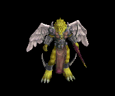 |
|
| 2 | オカー三角州 | |||||
| 3 | ウェテンロード / ケルチ大橋付近 | |||||
| 4 | タトバ山東部地域 | ケンタウロス | 810 |
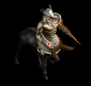 |
||
| 5 | エルン山迂回路 | |||||
| 6 | グレートマウンテン北部 | |||||
| 7 | ロングテール付近の狩場 | 金剛石ゴーレム | 860 |
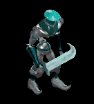 |
||
| 8 | オロイン森 | |||||
| 9 | テンドペンド平原 / トワイライト滝付近 | |||||
| 番号 | [P] | [C] | マップ名 | 適正Lv | 画像 |
|---|---|---|---|---|---|
| 9 | 850～950 | ||||
| 1 | [C] | ブラックファイヤー中心地 | 800-850 | 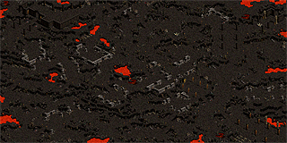 |
|
| 2 | ブラックファイヤー洞窟 | 800-850 | 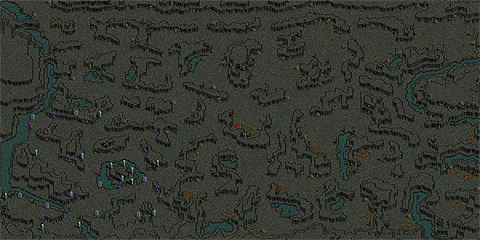 |
||
| 3 | デフヒルズ峡谷の深い所 | 850-900 | 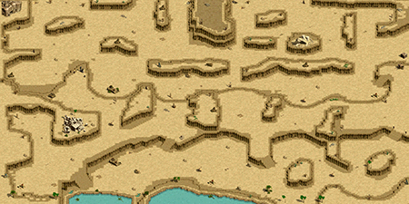 |
||
| 4 | [C] | 荒野の要塞 | 850-900 | 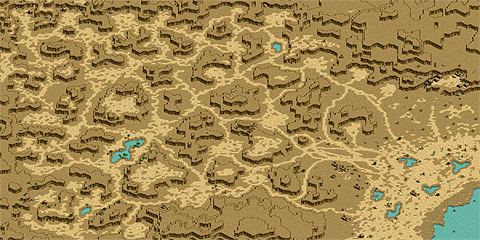 |
|
| 5 | [C] | 荒野の要塞入口 | 850-900 | 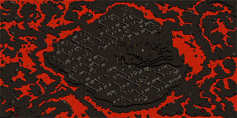 |
|
| 6 | [C] | 捨てられた地下墓地 B1 | 900-925 | 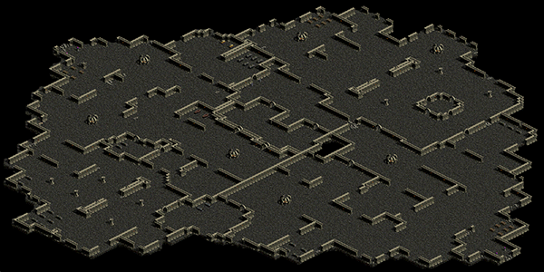 |
|
| 7 | [C] | 希望と絶望の境目 | 920-935 | 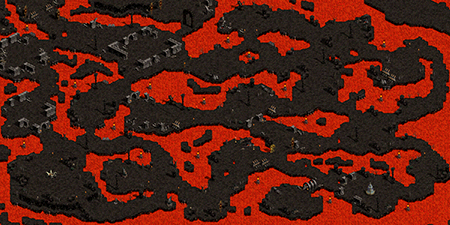 |
|
| 番号 | [P] | [C] | マップ名 | 適正Lv | 画像 |
|---|---|---|---|---|---|
| 10 | 950～1050 | ||||
| 1 | 神獣の野原 | 935-965 | 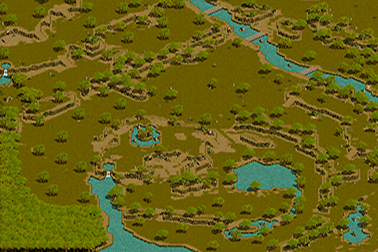 |
||
| 2 | [C] | 深淵の地底湖隧道 | 820-850 | 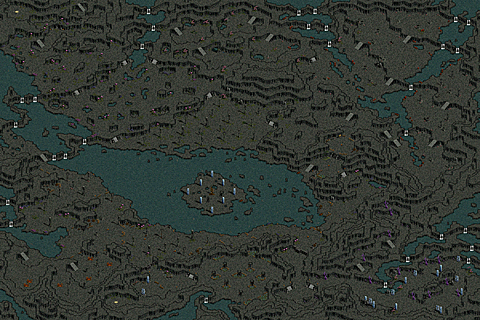 |
|
| 3 | [C] | 捨てられた地下墓地 B2 | 925-950 | 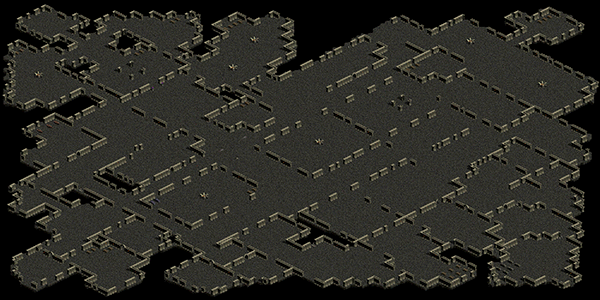 |
|
| 4 | [C] | 没落した悪魔の地 | 975-1000 | 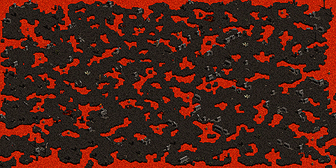 |
|
| 5 | [C] | 忘れられた地下収容所 B1 | 975-1000 | 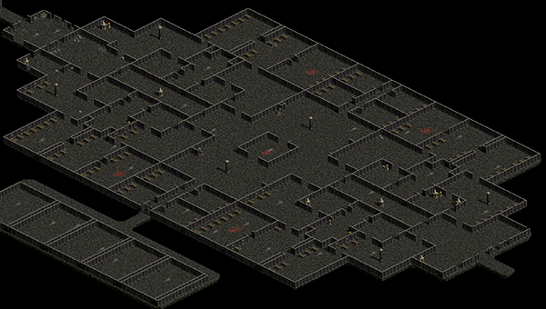 |
|
| 6 | [C] | 忘れられた地下収容所 B2 | 1000-1025 | 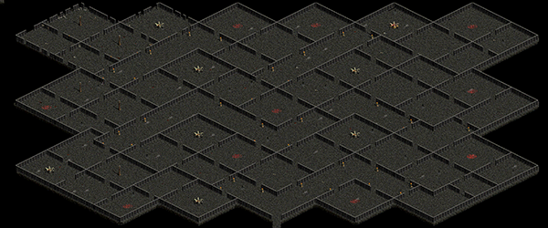 |
|
| 7 | [C] | アメンアイランド | 1000-1050 | 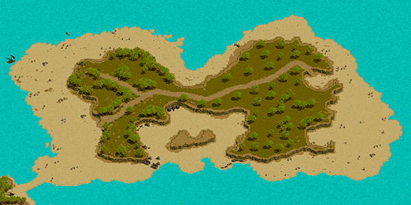 |
|
| 8 | [C] | 海底神殿 B1 | 1025-1050 | 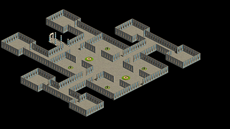 |
|
| 9 | [C] | 忘れられた地下収容所 B3 | 1025-1050 | 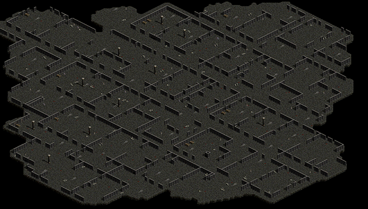 |
|
| 番号 | [P] | [C] | マップ名 | 適正Lv | 画像 |
|---|---|---|---|---|---|
| 11 | 1050～1150 | ||||
| 1 | 生命の森中心部 | 1030-1065 | 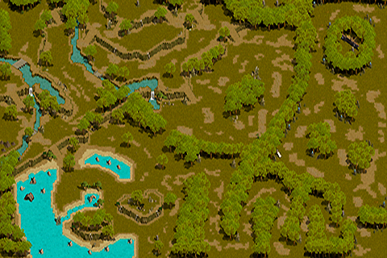 |
||
| 2 | [C] | 海底神殿 B2 | 1050-1100 | 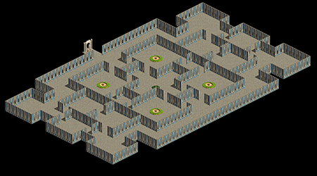 |
|
| 3 | 生命の森外郭 | 1075-1100 | 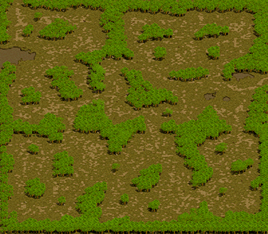 |
||
| 4 | [C] | 静寂の砂丘-月の谷 | 1100-1125 | 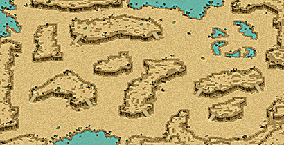 |
|
| 5 | [C] | 静寂の砂丘-星の谷 | 1125-1150 | 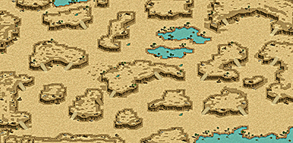 |
|
| 6 | 干からびた影の砂漠 | 1125-1150 | 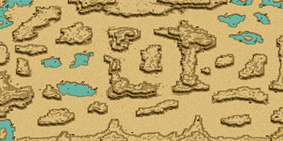 |
||
| 番号 | [P] | [C] | マップ名 | 適正Lv | 画像 |
|---|---|---|---|---|---|
| 12 | 1150～1250 | ||||
| 1 | 枯渇した生命の森 | 1145-1180 | 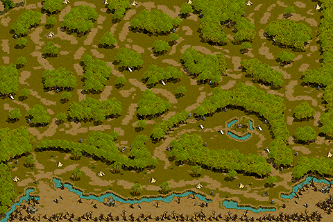 |
||
| 2 | 涼しい洞窟 | 1150-1200 | 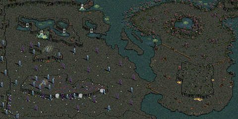 |
||
| 3 | [C] | 寂しい群島 | 1200-1250 | 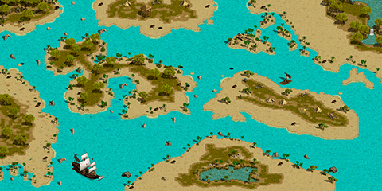 |
|
| 4 | [C] | 死の荒れ地 | 1200-1250 | 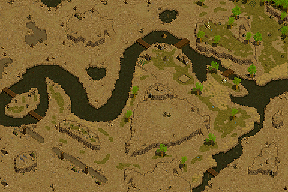 |
|
| 5 | ウエストスワンプ大空洞 B1 | 1250-1300 | 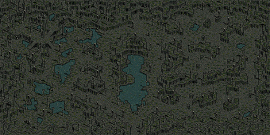 |
||
パーティボスモンスター 概要
・セミボスモンスターを倒すと、一定確率で特別なエフェクトが付随したパーティボスモンスターが出現します。・パーティボスモンスターを倒すと、同マップ内にいるパーティメンバー全員にボーナス経験値が入ります。
※泡・離れた場所にいるメンバーも可能。
ただし、ボスモンスターとLv差が50以上のパーティメンバーがいる場合、ボーナス経験値は入りません。
※ダークシャドウ(Lv165)はLv差が25以上の場合。
・ボーナス経験値は、ベリー等の「狩りによる経験値アップ」効果が適用されません。
・セミボスモンスターとパーティボスモンスターは非アクティブです。
ミラーダンジョン崩壊
既存のミラーダンジョンの一部が3時間ごとにランダムで崩壊し、高レベル帯向けの狩場に変化するシステムです。実装当初はLv1250～1400、現在は拡張によりLv1250～1600のレベル区間から崩壊中の狩場を選択して移動できます。
※ガイドと同様にスフィアがあれば風の羽を消費せずに移動可能です。
ミニマップ下部の「Guide」から現在の崩壊フィールドと残り時間を確認でき、切り替え10分前にはチャットで案内されます。
※メンテ時間等に依存せず、0:00,3:00,6:00,9:00,12:00,15:00,18:00,21:00,24:00に崩壊フィールドが変更されます。
マップ抽選はランダムのため、連続して同じマップが抽出されることもあります。
Lv1259～Lv1400までは15個個のミラーマップが、Lv1400～Lv1600までは10個のミラーマップが崩壊フィールドとして選択されます。
崩壊中はモンスターの能力値と経験値が上昇しますが、PTボスモンスターは追加経験値を獲得できません。

ミラーダンジョン崩壊の詳しい仕様・対象フィールド一覧
韓国先行情報 / 日本公式案内 / 2月新規アップデート / 日本公式ガイド
崩壊ミラー見分け方のコツ
モンスターの横に付いている盾が銀色なら崩壊ミラー(1250-1600)、銅色なら通常マップです(1250未満)

モンスター鑑別師の称号レベルが高いとモンスターレベルを可視化できて便利です。
ヤティカヌなどのミラーフィールドと異なり、帰還の巻物・ギルドホール時計は使用可能です。
ただし、ミラーフィールドについては原則スフィアによる記憶ができません。
モンスターの硬さ・経験値はヤティカヌのモンスターに準拠して調整されます。
Lv1250-1300：月の出
Lv1300-1350：日の出
Lv1350-1400：星降る
Lv1400-1450：微風
Lv1450-1500：夜影
Lv1500-1550：暁
Lv1550-1600：ウポス１層
備考
・2025/10/16アプデで860Lv以降のミラーダンジョンも移動できるようになりました。・全てのミラーマップに移動できるとは限りません。
・一部は位相ダンジョンと連動しているため注意。
・BF強化が行えるネルバ前に飛ぶには、ミラーテレポーター前の「バウン」に1連打で話しかけると飛べます。
遺物やBF強化したい時にスフィア・ガイド無で飛べるのがメリットです。
テレポート場所マッピング